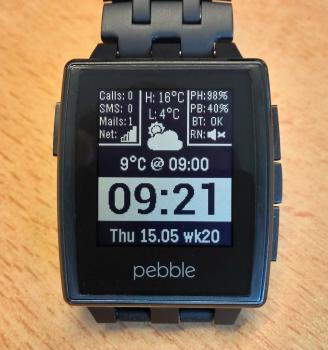
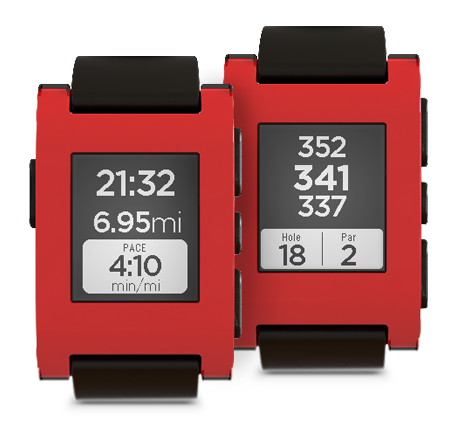
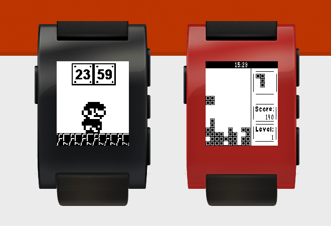
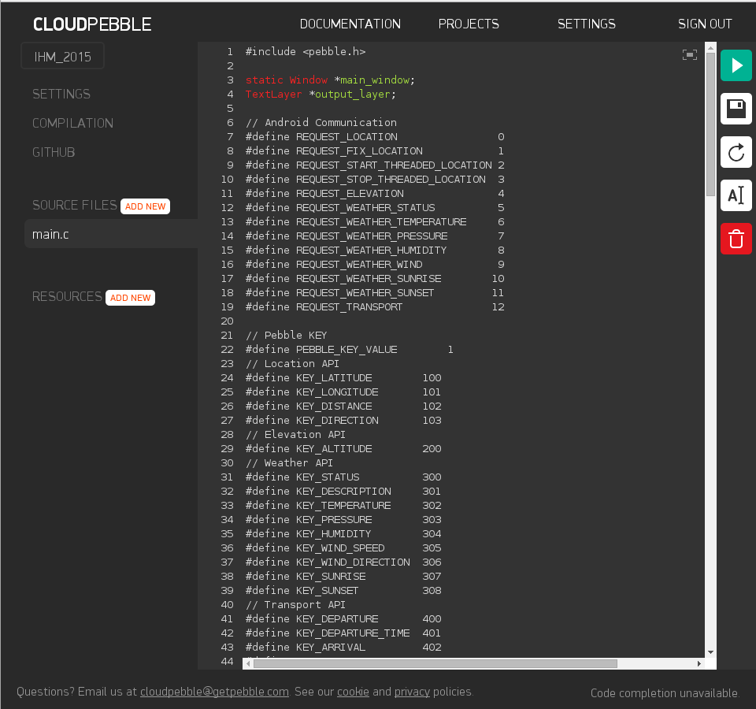
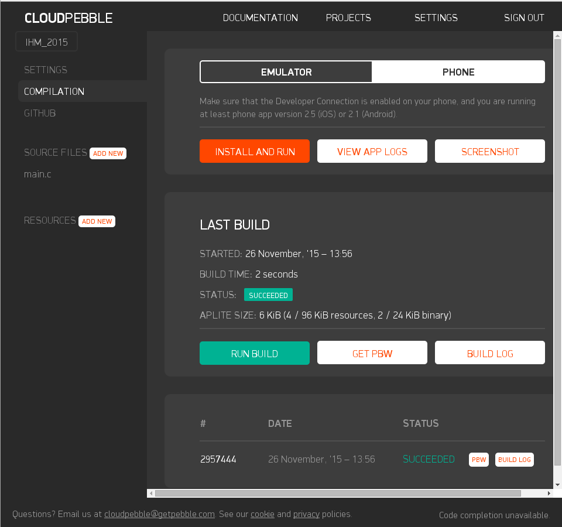

The goal of this project is to develop a custom user interface for the Pebble watch that can be configured by the user. The Smartwatch should be able to show information provided by the Smartphone it is paired with. We will provide you with some services from the Smartphone, and you have to create a user interface showing some of the fields as Pebble screens.
Bonus:
This video shows a device with an interface very similar to the one we ask you to build: https://www.youtube.com/watch?v=-Pc3o33vElI
The following sections will give you an introduction to the technology you are going to use during this project, and will describe the setup we propose as starting point of your implementations.
The Pebble Smartwatch is a smartwatch developed by Pebble Technology Corporation and released in 2013 that received the majority of its initial funding via the crowdfunding platform Kickstarter. The watch features a black and white low power LCD, a programmable CPU, memory, storage, Bluetooth, a vibrating motor, a magnetometer, an ambient light sensor, and an accelerometer; these extend its use into many roles including interacting with smartphone notifications, activity tracking, gaming, map display, and golf tracking. The Pebble is compatible with Android and iOS devices. When connected to one of these devices via Bluetooth, it will vibrate and display text messages, emails, incoming calls, and notifications from social media accounts when they are received on the paired device. It can also act as a remote control for the phone, or for cameras such as the GoPro. As of February 2014, the Pebble app store had over 1000 applications developed using Pebble's free software development kit (SDK). (From Wikipedia)
The Pebble has custom screens that show some information to the user. They allow the user to interact with the Pebble watch and thus, with the smartphone that paired the smartwatch. Watchapps and Watchfaces can be downloaded from the Pebble store, or implemented using the SDK provided by Pebble.
Both Watchapps and Watchfaces can be developped using the Pebble SDK. The main difference between the two kinds are that watchfaces are selected using the Up and Down buttons and serve as the default display on the watch. This also means that these buttons are not available for custom behavior (Back and Select are also not available to watchfaces). In contrast, watchapps are launched from the Pebble system menu. These have more capabilities such as button clicks and menu elements.
These are some examples of Watchapps and Watchfaces:
|  |  |  |
| Time and weather | Sports | Games |
Pebble Watchapps can run both independently, or sharing information with an app running on a paired Smartphone. In the particular case of this project, we provide you with an app called Pebble IHM who runs on the Smartphone and gathers the information that need to be shown in the Pebble screen.
Pebble IHM is already installed on the Smartphones we prepared for you. However, you can also clone the base Android studio project from GitHub by using:
git clone https://github.com/itzkha/IHM_2015.git
This Smartphone app gathers information from its own sensors, or from the web using different APIs (e.g., weather, altitude). The available fields include:
Pebble IHM will communicate with the Pebble watch via Bluetooth by using pre-formatted messages. These messages are items on a dictionary with key values that need to be common to both, Smartphone and Pebble, applications. The complete documentation of the AppMessage API can be found at https://developer.getpebble.com/guides/pebble-apps/communications/.
There are two possible setups for creating Pebble Watchapps:
Pebble Watchapps are written in C. Pebble offers a tutorial to learn the basics of the C language. Moreover, we recommend you to follow the tutorial at https://developer.getpebble.com/guides/pebble-apps/app-structure/ to acquire a basic understanding of how to create your own Watchapp.
Pebble Watchapps can be created without installing any software locally by using the online Pebble development platform CloudPebble. In order to use CloudPebble, you first have to create a user account and sing into this account.
By selecting "SOURCE FILES", CloudPebble allows you to create and edit your source files:
By selecting "COMPILATION", CloudPebble allows you to compile, debug and simulate your code:
If you configure CloudPebble to use your Smartphone instead of the emulator (i.e., selecting PHONE instead of EMULATOR) you can deploy your source code directly to your phone while editing the sources by pressing the ply button (the green button with the triangle pointing to the right).
Once the Watchapp is ready, you can deploy it into your watch by sinchronizing your project in CloudPebble with your smartphone using the button "INSTALL AND RUN".
We provide you with a base Watchapp also called Pebble IHM that you can use as starting point for building your own interface. You can download the file ihm_2015.zip and import the project into your CloudPebble account (PROJECTS -> IMPORT -> UPLOAD ZIP -> IMPORT).
This section describes the steps needed to make the example code to work.
Launch Pebble IHM on the Smartphone. The app will ask you to enter the UUID of the Pebble Watchapp to which it is going to communicate. The UUID of the example Watchapp can be obtained from the project settings on CloudPebble under the field "APP UUID". Once you acknowledge the UUID, you must turn on the switch Enable API. It will initialize the different APIs employed to obtain information from the web, and prepare the Smartphone for sending these items to the Pebble watch.
TODO: Better explain how the Smartphone app works
Navigate through the main menu and launch Pebble IHM on the watch. The Watchapp will start communicating with the Smartphone app and will configure something in it, or ask for a different field each time you press the UP button (i.e., top button on the right side of the watch).
| Press number | Item description |
| 1 | Ask for location: latitude and longitude |
| 2 | Set te current location as target location for navigation |
| 3 | Starts the thread that computes the distance and heading for navigation and ask for distance and heading to the predefined target |
| 4 | Stops the thread that computes the distance and heeading for navigation |
| 5 | Elevation |
| 6 | Weather status |
| 7 | Temperature |
| 8 | Pressure |
| 9 | Humidity |
| 10 | Wind speed and wind direction |
| 11 | Sunrise time |
| 12 | Sunset time |
| 13 | Time of the next train to a predefined city |